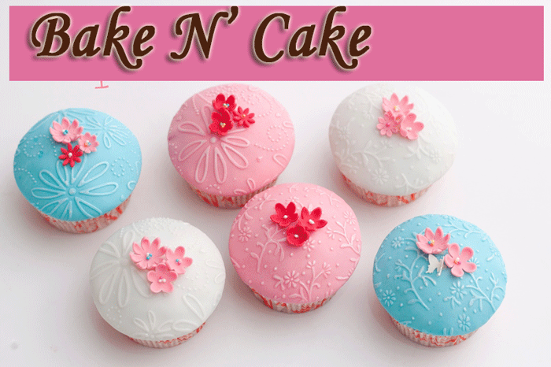

A popular, retro-styled retail bakery, Cupcakes specializes in whimsical cupcakes, cakes and other nostalgic baked goods made fresh daily. Bake and Cake bakes their products from scratch and use preservative-free, basic ingredients, offering customers fresh batches of yummy goodness daily.